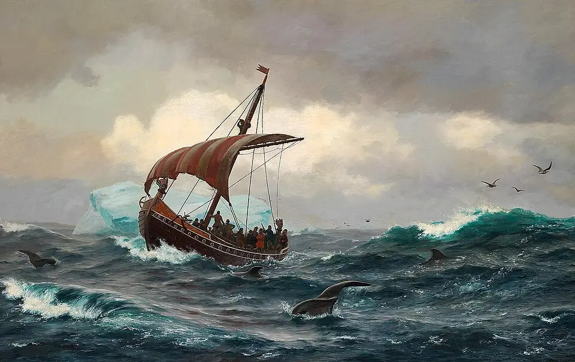
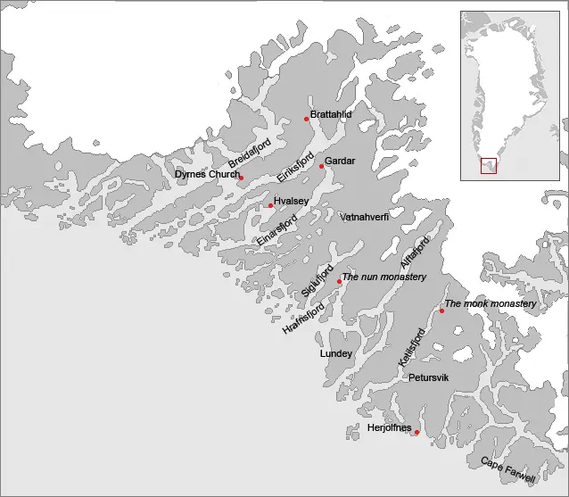
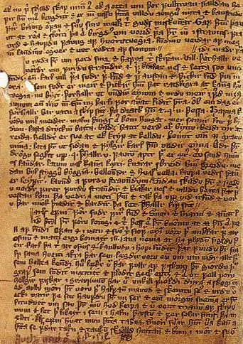
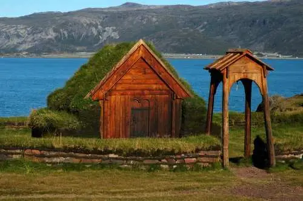

Erik Đỏ đặt tên "Đất Xanh" cho một hòn đảo băng giá
Bị kết án lưu đày ba năm vì giết người, Erik Đỏ đi về phía tây. Ông trở về với một vùng đất mới và một cái tên được chọn để thu hút người đi theo.

Khoảng năm 982, tại hội nghị Thorsnes ở miền tây Iceland, một người đàn ông tóc đỏ bị tuyên án lưu đày ba năm. Ông tên Erik Thorvaldsson. Ông đã giết người trong hai vụ tranh chấp liên tiếp. Thay vì trốn về một nơi quen thuộc, Erik giong buồm về phía tây, đến một vùng đất phủ băng mà gần như chưa ai định cư được. Ba năm sau, ông quay về và đặt cho nó một cái tên dễ nghe.
Một gia đình hay bị trục xuất
Theo các truyện kể Iceland, Erik sinh khoảng năm 950 ở vùng Jæren, Na Uy. Cha ông là Thorvald Asvaldsson bị trục xuất khỏi Na Uy vì tội ngộ sát. Cả nhà sang Iceland khi Erik khoảng 10 tuổi, định cư ở Hornstrandir, vùng tây bắc hoang vắng.
Lớn lên, Erik cưới Þjódhild và lập trang trại ở Haukadalr. Rắc rối bắt đầu khi nô lệ của ông gây sạt lở đất xuống trang trại hàng xóm. Một người họ hàng của hàng xóm, Eyjolf, giết đám nô lệ. Erik giết lại Eyjolf và một người tên Hrafn. Ông bị đuổi khỏi vùng, chuyển ra đảo, rồi lại tranh chấp với một người tên Thorgest về đôi cột gỗ chạm khắc mà cha ông mang từ Na Uy sang. Trong cuộc ẩu đả sau đó, Erik giết hai con trai của Thorgest. Hội nghị Thorsnes tuyên án lưu đày cả Erik và những người theo ông.
Không phải người đầu tiên


Erik không phát hiện ra Greenland. Theo truyền thống, Gunnbjörn Ulfsson đã nhìn thấy vùng đất này gần một thế kỷ trước, khi bị gió thổi dạt khỏi Iceland. Khoảng 80 năm sau, một người lưu đày khác là Snæbjörn galti đã thử lập nghiệp ở đó và thất bại vì mùa đông khắc nghiệt. Erik là người đầu tiên định cư lâu dài thành công.
Theo Saga Erik Đỏ, ông dành ba năm lưu đày để thám hiểm. Ông vòng qua mũi cực nam, sau này gọi là mũi Farewell, rồi đi ngược lên bờ tây. Ở đó, sâu trong các vịnh hẹp, có những dải đất gần như không có băng, khí hậu giống Iceland.
Theo lời kể trong saga, Erik gọi vùng đất là Grœnland, tức "Đất Xanh", vì cho rằng người ta sẽ muốn đến nếu nơi đó có cái tên đẹp.
Sử sách chép gì


Nguồn chính là hai truyện kể gọi chung là Vinland saga: Saga Erik Đỏ và Saga người Greenland. Saga Erik Đỏ được cho là viết vào thế kỷ 13, khoảng hai đến ba trăm năm sau sự kiện, và còn trong hai bản chép tay là Hauksbók (thế kỷ 14) và Skálholtsbók (thế kỷ 15). Hai saga khác nhau ở nhiều chi tiết, như việc con gái Erik là Freydís là em ruột hay em cùng cha khác mẹ của Leif.
Chuyện đặt tên đến từ đây. Theo lời kể trong saga, Erik gọi vùng đất là Grœnland, tức "Đất Xanh", vì cho rằng người ta sẽ muốn đến nếu nơi đó có cái tên đẹp. Đó là lời truyện kể gán cho Erik, không phải ghi chép đương thời. Phần có thể kiểm chứng là các khu định cư: khảo cổ học đã tìm thấy khoảng 500 nhóm tàn tích trang trại và 16 nhà thờ ở Khu định cư phía Đông.
25 con thuyền ra đi, 14 chiếc đến nơi


Mùa hè năm 985, Erik quay lại Greenland cùng đoàn người di cư. Theo các saga, 25 con thuyền rời Iceland, chỉ 14 chiếc đến nơi. Một số quay về, số khác có lẽ bị mất. Họ lập hai khu định cư ở bờ tây nam: Khu phía Đông gần Qaqortoq ngày nay, và Khu phía Tây gần Nuuk. Erik xây trang trại Brattahlíð ở Qassiarsuk ngày nay và trở thành thủ lĩnh tối cao.
Vợ Erik theo Kitô giáo và cho xây nhà thờ đầu tiên ở Greenland. Erik thì giữ tín ngưỡng Bắc Âu cũ. Saga kể rằng vì thế bà từ chối chung giường với chồng. Khoảng năm 1002, một đoàn di cư mới mang theo dịch bệnh. Erik chết trong mùa đông đó, khoảng năm 1003. Con trai ông, Leif Erikson, khi ấy đã đến Vinland, một vùng của Bắc Mỹ có lẽ gần Newfoundland ngày nay. Theo saga, Erik định đi cùng nhưng ngã ngựa trên đường ra thuyền, coi đó là điềm xấu và ở lại.
Dư âm
Khu phía Đông lúc đông nhất có khoảng 4.000 người. Ghi chép cuối cùng về nó là một đám cưới ở nhà thờ Hvalsey năm 1408. Sau đó cộng đồng biến mất. Các giả thuyết gồm Tiểu Băng hà, cướp biển, xung đột với người Inuit và việc Na Uy bỏ rơi thuộc địa. Một dấu vết còn lại nằm ngay trong tiếng Greenland: từ Kalaaleq, nghĩa là "người Greenland", được cho là bắt nguồn từ Skrælingr, chữ người Bắc Âu dùng để gọi dân bản địa. Erik Đỏ có thật, các khu định cư có thật, còn lý do ông chọn cái tên Greenland thì ta chỉ biết qua lời kể của các saga.